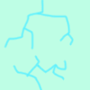
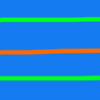

モジュール詳細：太陽系外惑星
バレンシ’、 バレンシ’、 バレンシ’、 バレンシ’、 バレンシ’、 バレンシ’、 バレンシ’、 バレンシ’、 バレンシ’、 バレンシ’、 バレンシ’、 バレンシ’、 バレンシ’、 バレンシ’、 バレンシ’。
- モジュール上には恒星(中央)があり、3つの惑星が恒星の周りを周回している。カウンドダウンタイマーの最後の数字が「ターゲット数字」のときに「ターゲット惑星」を押す。
- 開始ターゲット惑星は、他の惑星とは異なる方向に周回している惑星である。すべての惑星が時計回りに周回している場合、開始ターゲット惑星は星に一番近い惑星である。すべての惑星が反時計回りに周回している場合、開始ターゲット惑星は恒星から最も遠い惑星である。開始ターゲット数字は、惑星の外観によって決定される、ターゲット惑星の表面値である。
| 0 | 1 | 2 | 3 | 4 |
 |
 |
 | ||
| 5 | 6 | 7 | 8 | 9 |
 |
 |
 |
 |  |
- 次に、次のページのチャートを使用し、ターゲット惑星とターゲット数字を変更する。「Start」というラベルのセルから北を向いて開始し、バッテリーの数分を恒星が回転している方向に45度回転する。その方向の開始ターゲット惑星の外周の位置のセルに移動する。(例えば開始ターゲット惑星が一番外側なら外側のセルに移動する)。
- 惑星の公転周期*にその惑星の表面値を加えたものをバッテリーホルダーの数で割り、余りを求める。バッテリーホルダーがない場合は5で割った余りを求める。結果にポートの数を加算し、惑星が回転している方向にその数の分移動する。到達した地点のルールを適用する。
- 現在のセル／惑星から1つ内側(一番内側にいる場合は一番外側)に移動し、3つの惑星全てのルール変更が行われるまで1つ上の手順を実行する。